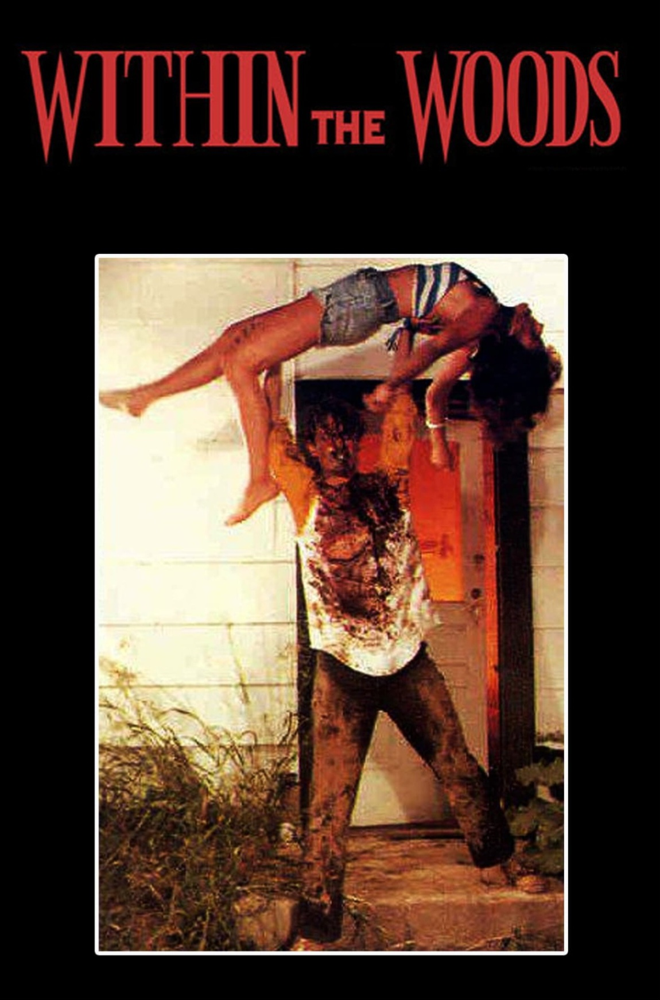
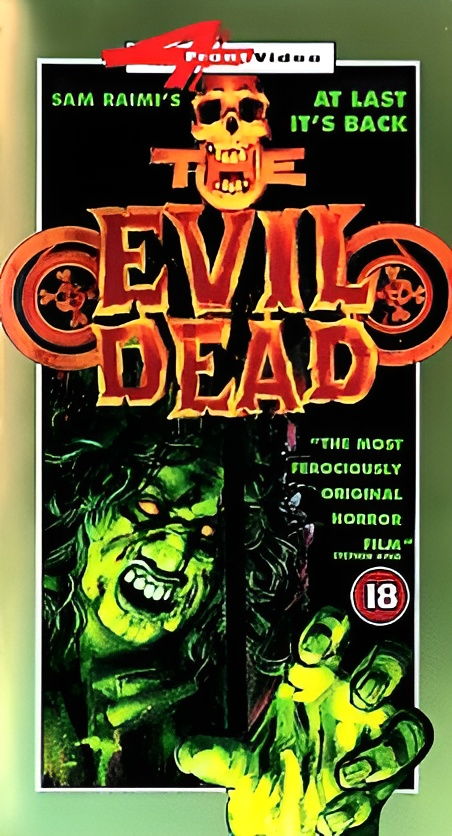
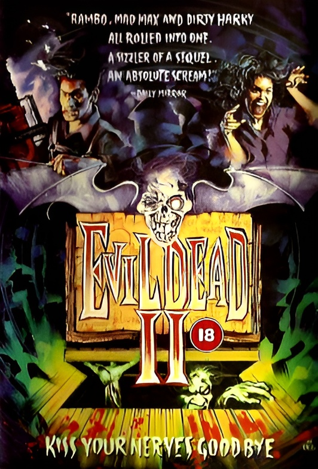
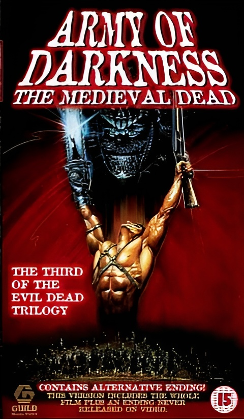
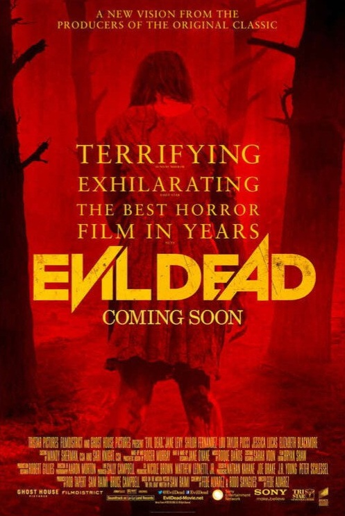
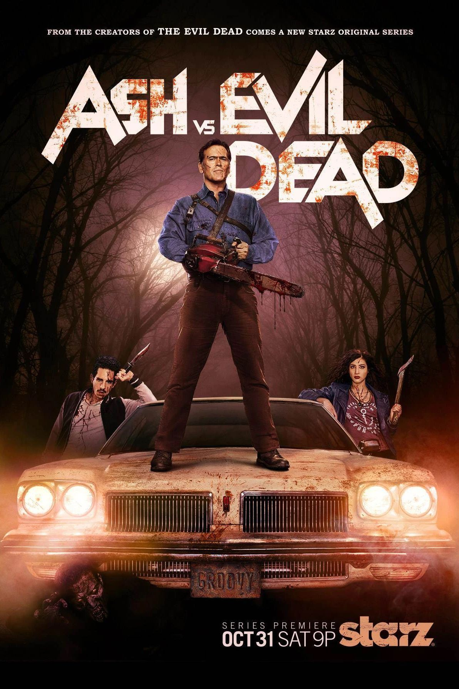
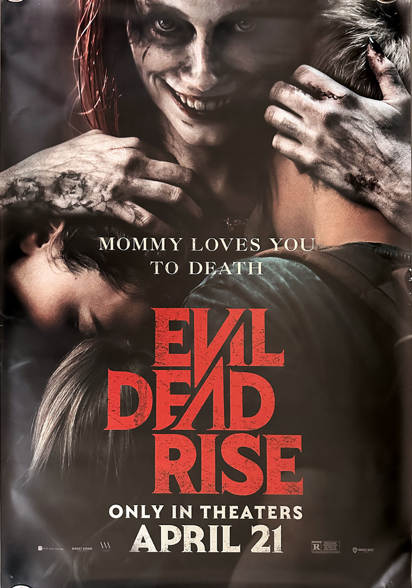
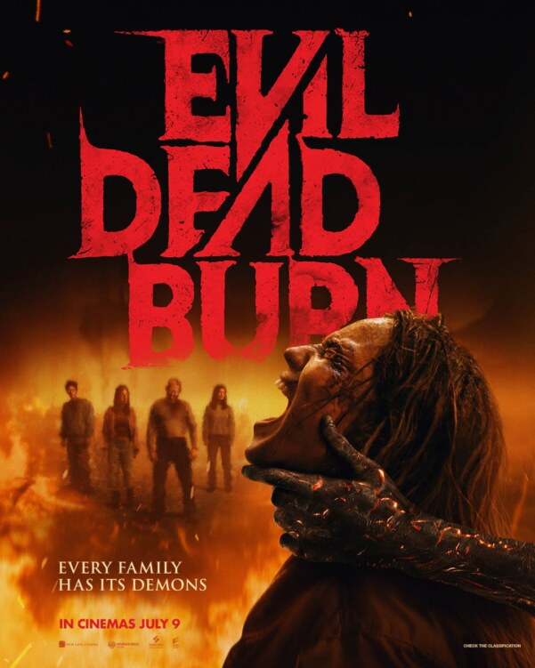

Evil Dead Movie & TV Archive

Within the Woods
The original short film created by Sam Raimi that introduced the world to the terrifying concept of the Deadites. A group of friends discover the Book of the Dead at a remote cabin and unleash an ancient evil.

The Evil Dead
Five friends travel to an isolated cabin where they discover the Necronomicon Ex-Mortis. After reading from its pages, they unleash a demonic force that begins possessing them one by one.

Evil Dead II
Ash Williams returns to the cabin and once again faces the forces of darkness. A continuation and reimagining of the original story, combining terrifying horror with the series' trademark dark humour.

Army of Darkness
Transported back to the Middle Ages, Ash must battle armies of Deadites and find a way home while facing his greatest enemy: his own evil counterpart.

Evil Dead (2013)
A new group of survivors discover the Necronomicon inside an abandoned cabin. Their struggle against possession brings a brutal and terrifying new vision of the Evil Dead legend.

Ash vs Evil Dead
Decades after his battle at the cabin, Ash Williams is forced back into action when the Deadites return. Joined by new allies, Ash fights to save the world from the darkness he accidentally unleashed.

Evil Dead Rise
A family discovers the Book of the Dead hidden beneath an apartment building, unleashing a new nightmare. The Deadites return in a terrifying urban setting far from the traditional cabin.

Evil Dead Burn
The latest chapter in the Evil Dead saga, bringing another horrifying encounter with the forces of the Necronomicon and the relentless evil contained within its pages.

Evil Dead Wrath
A new battle against the Deadites begins as the ancient evil rises once again. Discover the next terrifying chapter in the continuing legacy of the Book of the Dead.